|
| Conversion Pipeline Demonstration |
|
This is a simple demonstration of AGG conversion pipelines with examples of code. Assume we have a rendering buffer like this:
agg::render_buffer buf;
buf.attach(pmap.get_buf(),
pmap.get_width(),
pmap.get_height(),
pmap.get_row_bytes());
agg::render_bgr24_solid r(&buf);
r.clear(agg::rgba8(255, 255, 255));
r.set_attribute(agg::rgba8(0, 0, 0));
agg::polyfill pf;
Here pmap is some class that povides memory for rendering (Windows programmers can use agg::pixel_map). We start with creating a very simple class that supports the Vertex Source interface:
class simplest_vertex_source
{
unsigned nv;
public:
void reset_iterator(unsigned)
{
nv = 0;
}
agg::pathflag_e next_vertex(double* x, double* y)
{
nv++;
switch(nv)
{
case 1: *x = 100; *y = 100; return agg::pathflag_move_to;
case 2: *x = 120; *y = 200; return agg::pathflag_line_to;
case 3: *x = 180; *y = 200; return agg::pathflag_line_to;
case 4: *x = 200; *y = 100; return agg::pathflag_line_to;
}
return agg::pathflag_stop;
}
};
This class returns four hardcoded points with coordinates (100,100), (120,200), (180,200), and (200,100) when its function next_vertex() is being called. On the fifth call the function returns pathflag_stop. We will use it for our experimetns with pipelines. The simplest pipeline is null-pipeline. We just use our class as a vertex source to render the polygon: // Simplest vertex source. // Gives 4 vertices with hardcoded coordinates simplest_vertex_source src; agg::make_polygon(&pf, &src, 0); agg::render_polygon(&r, &pf); Then we use conv_polygon to calculate additional 4 points and to draw an outline with thickness of 3 pixels: 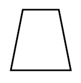// Making polygonal outline from the vertex source simplest_vertex_source src; agg::conv_polygon< simplest_vertex_source > pgon(&src); pgon.set_thickness(3.0); agg::make_polygon(&pf, &pgon, 0); agg::render_polygon(&r, &pf); What is the difference between conv_polygon and conv_polyline? Compare the following code with the previous example and the result of it: 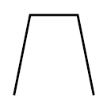// Making a polyline from the vertex source simplest_vertex_source src; agg::conv_polyline< simplest_vertex_source > pline(&src); pline.set_thickness(3.0); agg::make_polygon(&pf, &pline, 0); agg::render_polygon(&r, &pf); Now we will copy/paste our class simplest_vertex_source and modify it:
class bcurve_vertex_source
{
unsigned nv;
public:
void reset_iterator(unsigned)
{
nv = 0;
}
agg::pathflag_e next_vertex(double* x, double* y)
{
nv++;
switch(nv)
{
case 1: *x = 100; *y = 100; return agg::pathflag_move_to;
case 2: *x = 120; *y = 200; return agg::pathflag_curve4;
case 3: *x = 180; *y = 200; return agg::pathflag_curve4;
case 4: *x = 200; *y = 100; return agg::pathflag_curve4;
}
return agg::pathflag_stop;
}
};
The only difference here is returning value pathflag_curve4 instead of pathflag_move_to. Now we simply use this class as in the first example: // Simplest vertex source with Bezier curve flags bcurve_vertex_source src; agg::make_polygon(&pf, &src, 0); agg::render_polygon(&r, &pf); Since we return some kind of curve flags we could expect our figure to be also curved. But why it isn't? It's because we should use conv_curve to calculate a number of actual curve points: 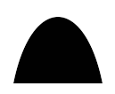// Simplest vertex source with Bezier curve flags // and curve converter bcurve_vertex_source src; agg::conv_curve< bcurve_vertex_source > curve(&src); agg::make_polygon(&pf, &curve, 0); agg::render_polygon(&r, &pf); So, we have a Vertex Source that returns pathflag_curve4 and we also use some conv_curve converter. Looks like some extra comexity. Why not to use a simple curve converter embedded into the polyfill? The only reason is to avoid overhead. If you don't need curves at all, you don't link their code and you remove extra "if-else" logic. If you do you simply include the appropriate converters into your pipeline. And this idea is the general approach in AGG: Using a number of independent parts that you can combine as you wish. Polygon outline. 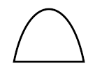
// Simplest vertex source with Bezier curve flags,
// curve converter, and polygonal outline converter
bcurve_vertex_source src;
agg::conv_curve< bcurve_vertex_source > curve(&src);
agg::conv_polygon<
agg::conv_curve< bcurve_vertex_source >
> pgon(&curve);
pgon.set_thickness(3.0);
agg::make_polygon(&pf, &pgon, 0);
agg::render_polygon(&r, &pf);
And polyline outline. 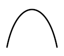
// Simplest vertex source with Bezier curve flags,
// curve converter, and polyline converter
bcurve_vertex_source src;
agg::conv_curve< bcurve_vertex_source > curve(&src);
agg::conv_polyline<
agg::conv_curve< bcurve_vertex_source >
> pline(&curve);
pline.set_thickness(3.0);
agg::make_polygon(&pf, &pline, 0);
agg::render_polygon(&r, &pf);
Now we return to our class simplest_vertex_source and try to pass it through the conv_smooth_polygon converter. This converter is supposed to be used for spline-like interpolation of poligons. // Polygon smoothing converter (naked) simplest_vertex_source src; agg::conv_smooth_polygon< simplest_vertex_source > pgon(&src); pgon.set_smooth_value(0.5); agg::make_polygon(&pf, &pgon, 0); agg::render_polygon(&r, &pf); 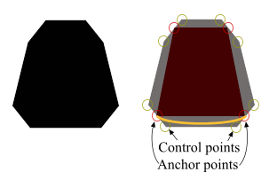 The left figure is what we will see, the right one is the explanation. conv_smooth_polygon generates 8 control points for cubic Bezier curves. From the previous examples we know how to obtain a curved polygon. 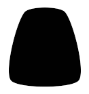
// Polygon smoothing converter and curve converter
simplest_vertex_source src;
agg::conv_smooth_polygon< simplest_vertex_source > pgon(&src);
pgon.set_smooth_value(0.5);
agg::conv_curve <
agg::conv_smooth_polygon< simplest_vertex_source >
> curve(&pgon);
agg::make_polygon(&pf, &curve, 0);
agg::render_polygon(&r, &pf);
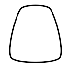
// Polygon smoothing converter, curve converter, and
// polygonal outline converter
simplest_vertex_source src;
agg::conv_smooth_polygon< simplest_vertex_source > pgon(&src);
pgon.set_smooth_value(0.5);
agg::conv_curve<
agg::conv_smooth_polygon< simplest_vertex_source >
> curve(&pgon);
agg::conv_polygon<
agg::conv_curve<
agg::conv_smooth_polygon< simplest_vertex_source >
>
> pgon2(&curve);
pgon2.set_thickness(3.0);
agg::make_polygon(&pf, &pgon2, 0);
agg::render_polygon(&r, &pf);
// Polygon smoothing converter, curve converter, and
// polyline converter (wrong result)
simplest_vertex_source src;
agg::conv_smooth_polygon< simplest_vertex_source > pgon(&src);
pgon.set_smooth_value(0.5);
agg::conv_curve<
agg::conv_smooth_polygon< simplest_vertex_source >
> curve(&pgon);
agg::conv_polyline<
agg::conv_curve<
agg::conv_smooth_polygon< simplest_vertex_source >
>
> pline2(&curve);
pline2.set_thickness(3.0);
agg::make_polygon(&pf, &pline2, 0);
agg::render_polygon(&r, &pf);
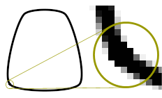 This example requires some explanations. We used conv_polyline but there a polygon is drawn. The problem is that conv_smooth_polygon and then conv_curve close our polyline, i.e. it interprets our Vertex Source as a closed figure. Two square caps of our polyline result in a small defect marked with a circle. If we replace conv_smooth_polygon to conv_smooth_polyline we will see what we expected.
// Polyline smoothing converter, curve converter, and
// polyline converter (expected result)
simplest_vertex_source src;
agg::conv_smooth_polyline< simplest_vertex_source > pline(&src);
pline.set_smooth_value(0.5);
agg::conv_curve<
agg::conv_smooth_polyline< simplest_vertex_source >
> curve(&pline);
agg::conv_polyline<
agg::conv_curve<
agg::conv_smooth_polyline< simplest_vertex_source >
>
> pline2(&curve);
pline2.set_thickness(3.0);
agg::make_polygon(&pf, &pline2, 0);
agg::render_polygon(&r, &pf);
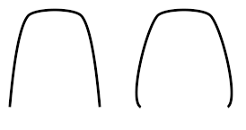 Besides, conv_smooth_polyline generates quadric Bezier curves (with one control point) for the first and the last segments because our figure is not supposed to be closed. Otherways it would look not very natural, like the right one. The following example demonstrates how to use a transformation converter (conv_transform). Class conv_transform has two template arguments. The first one is, as usual, Vertex Source, the second is a transformation class that must support the only method transform(x, y). Most probably you will use affine transformations (affine_matrix), but you also can create your own transformer, for example, some non-linear one.
// Polyline smoothing converter, curve converter,
// polyline converter, affine transformations converter
simplest_vertex_source src;
agg::conv_smooth_polyline< simplest_vertex_source > pline(&src);
pline.set_smooth_value(0.5);
agg::conv_curve<
agg::conv_smooth_polyline< simplest_vertex_source >
> curve(&pline);
agg::conv_polyline<
agg::conv_curve<
agg::conv_smooth_polyline< simplest_vertex_source >
>
> pline2(&curve);
agg::affine_matrix mtx;
mtx *= agg::translation_matrix(-150.0, -150.0);
mtx *= agg::scaling_matrix(1.8, 1.8);
mtx *= agg::rotation_matrix(35.0 * 180.0 / agg::pi);
mtx *= agg::translation_matrix(150.0, 150.0);
agg::conv_transform<
agg::conv_polyline<
agg::conv_curve<
agg::conv_smooth_polyline< simplest_vertex_source >
>
>,
agg::affine_matrix
> trans(&pline2, &mtx);
pline2.set_thickness(3.0);
agg::make_polygon(&pf, &trans, 0);
agg::render_polygon(&r, &pf);
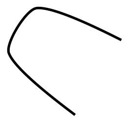 Below there are some more examples of using existing classes of AGG, such as curve4 and path_storage 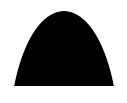 // Curve generator as a vertex source agg::curve4 curve; curve.init(100, 100, 120, 200, 180, 200, 200, 100); agg::make_polygon(&pf, &curve, 0); agg::render_polygon(&r, &pf);
// Path storage with curves but without converters agg::path_storage path; path.move_to(100, 100); path.curve4(120, 200, 180, 200, 200, 100); agg::make_polygon(&pf, &path, 0); agg::render_polygon(&r, &pf); 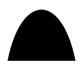 // Path storage with curves and curve converter agg::path_storage path; path.move_to(100, 100); path.curve4(120, 200, 180, 200, 200, 100); agg::conv_curve< agg::path_storage > curve(&path); agg::make_polygon(&pf, &curve, 0); agg::render_polygon(&r, &pf);
Full source code of this example and a project for MS Visual C++ 6.0 is available
here.
|
| Copyright © 2002 Maxim Shemanarev (McSeem) |